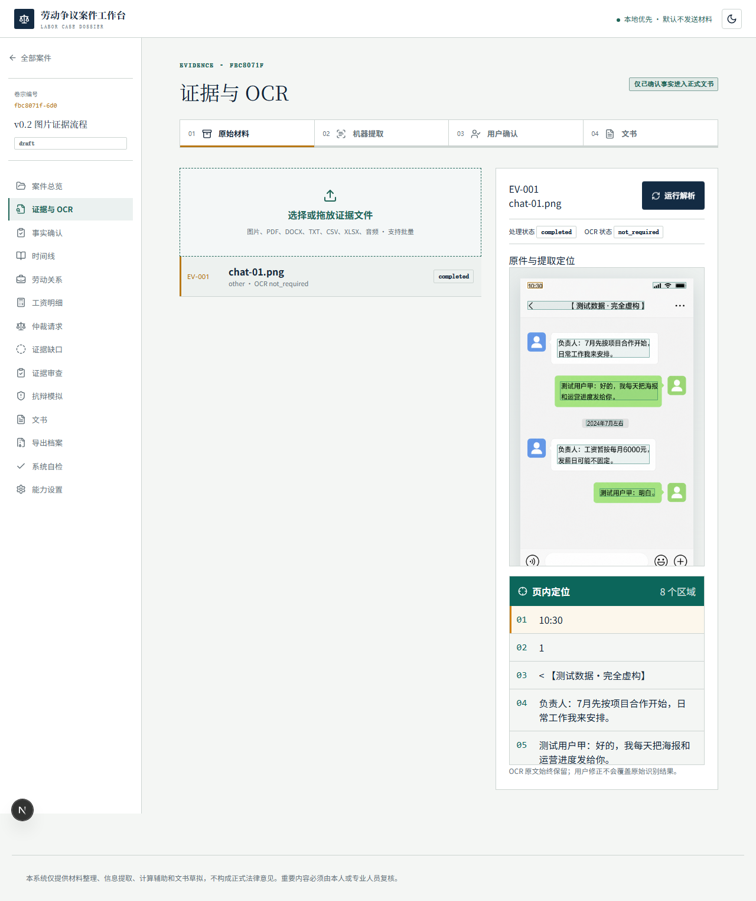

把零散材料，整理成可复核的证据链。
为欠薪与劳动仲裁整理聊天截图、录音和工资流水。劳动争议案件工作台保留材料出处，辅助生成时间线、欠薪明细、证据清单与文书草稿。

围绕材料，而非空泛回答
- OCR 提取聊天截图与 PDF，保留来源及定位信息。
- 录音转写与说话人片段，辅助还原事件时间线。
- 确定性金额计算、证据图谱与审查意见。
- 导出 DOCX／XLSX 草稿及包含哈希清单的案件档案。
让材料留在你的设备上
核心建案、计算、文书与导出采用本地优先架构。可选 OCR、语音和向量模型需要另行安装；云模型由你自主配置。
这是材料整理和文书草拟工具，不提供正式法律意见。机器提取与模型建议需人工核对；连接云 API 前请确认资料授权与隐私要求。
从本地运行开始
准备 Python 3.11+ 与 Node.js 22+，克隆源码后按照部署文档安装后端和前端。无需为基础功能配置云模型密钥。
- 克隆
https://github.com/Jackeyhate9/labor-case-agent.git。 - 参照本地部署文档安装依赖并初始化数据库。
- 启动 Python API 与 Next.js 前端，访问
http://localhost:3000。
本网站为静态项目介绍页。案件工作台在本地运行；本站不提供案件上传入口。Windows 安装器请以仓库实际发布产物为准。
交流与反馈
发现问题、希望改进流程，欢迎通过 GitHub 提交反馈。请使用脱敏示例，勿在公开讨论区提交真实案件原件、身份证号、手机号或 API 密钥。
支持项目继续维护
如果这个工具帮到了你，欢迎自愿赞助。赞助不影响开源使用，也不代表法律服务或案件结果承诺。
微信扫码自愿赞助，付款前请核对收款人。点击图片可查看原图。